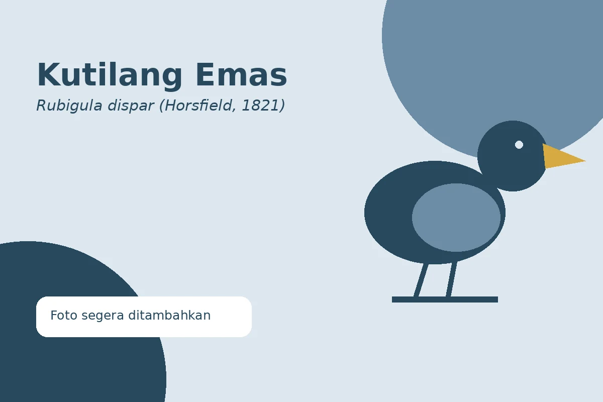
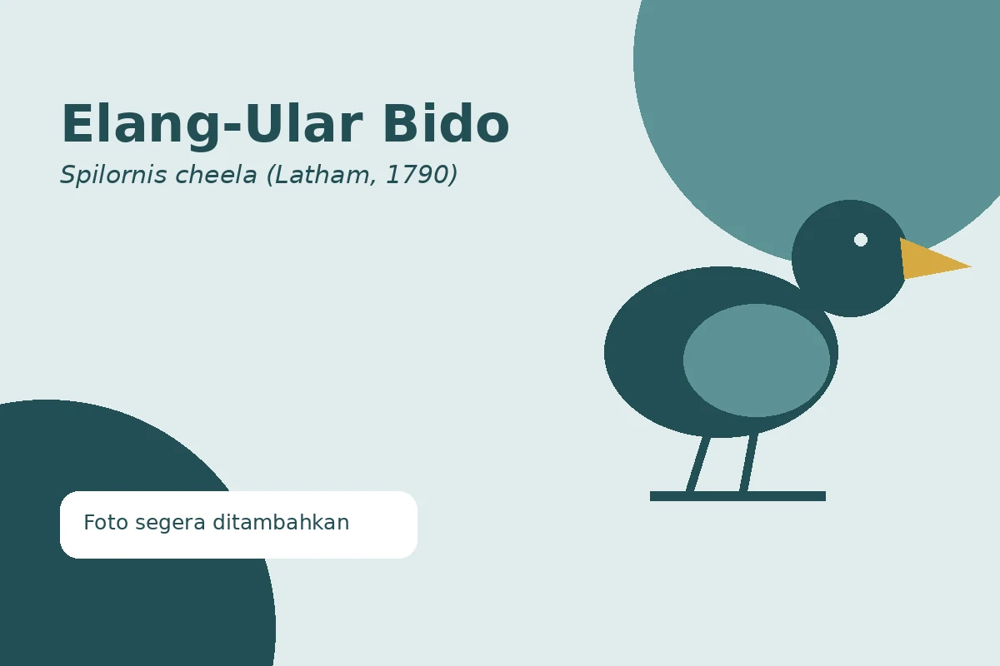
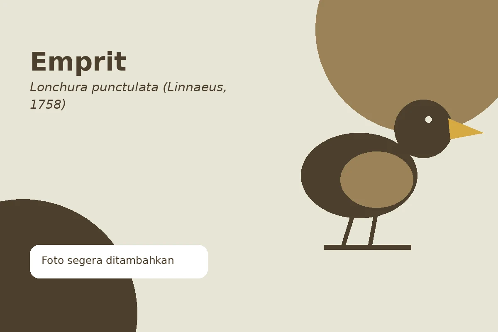
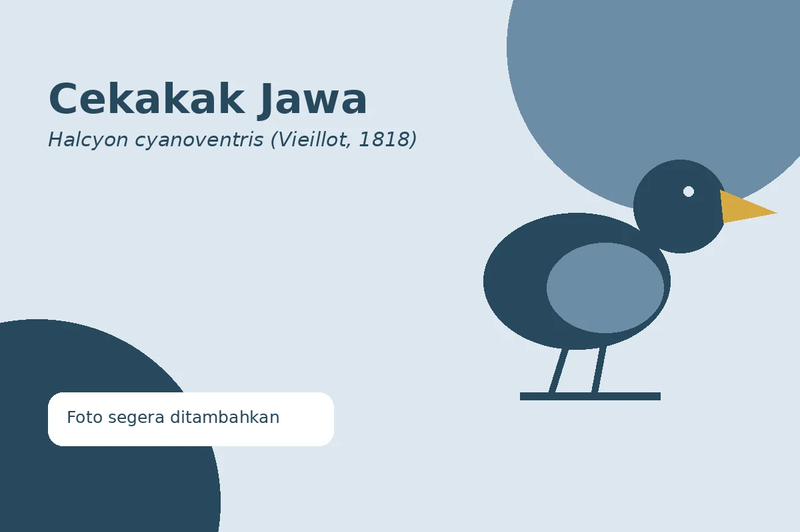
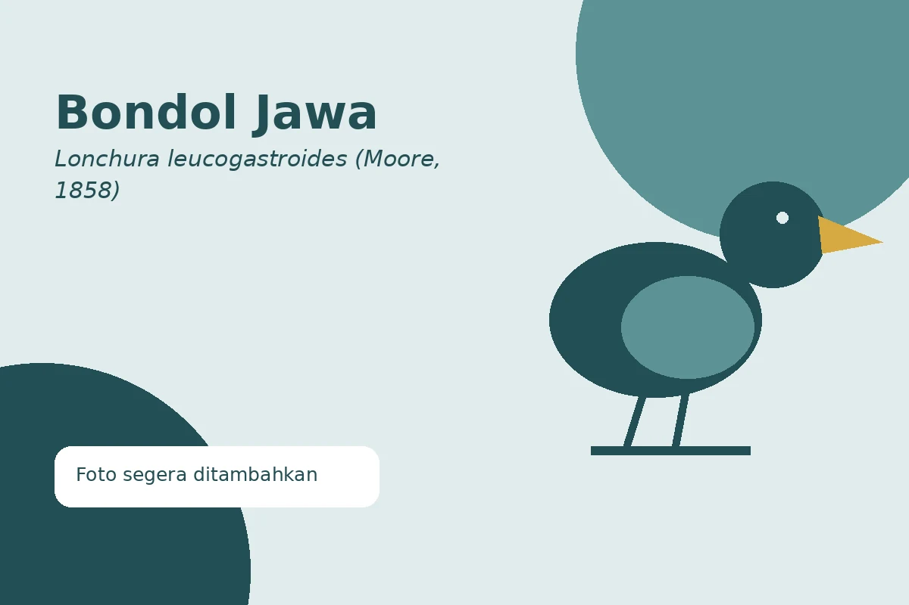
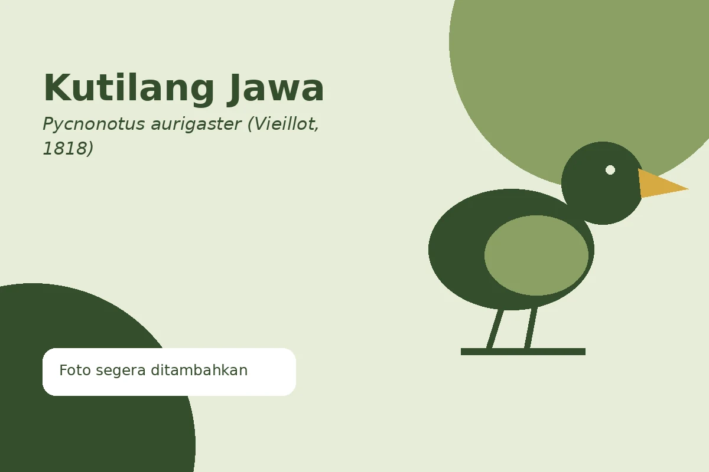
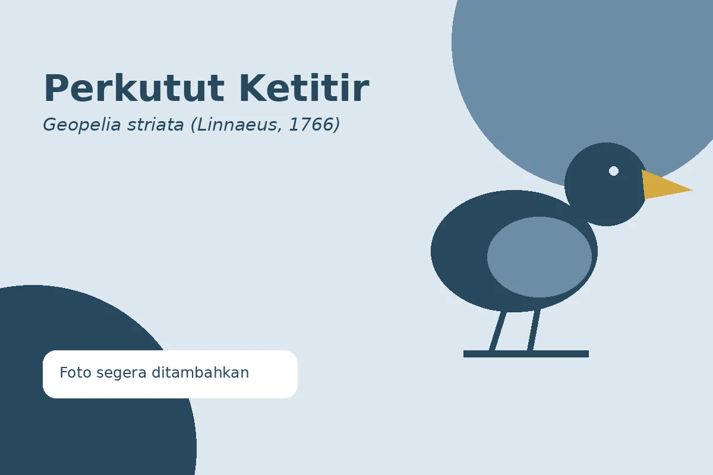
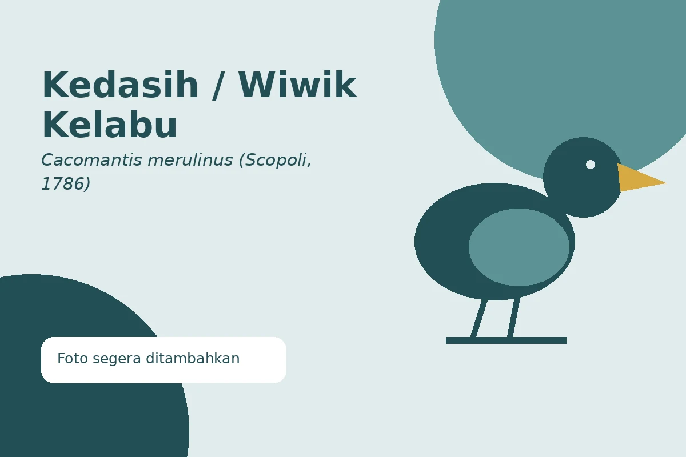
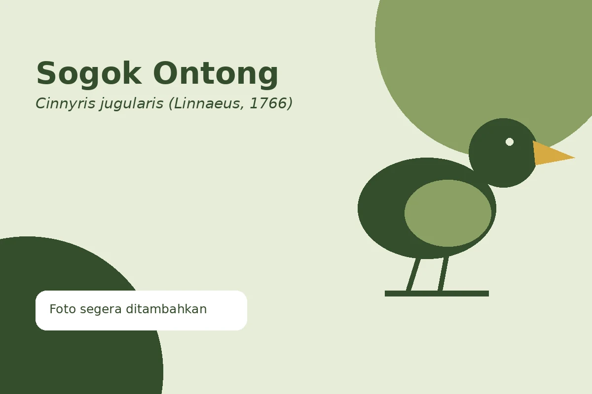

Kutilang Emas
Rubigula dispar (Horsfield, 1821)
Lihat detailTemukan 11 jenis burung yang diamati di sekitar jalur Curug Siluwok. Gunakan pencarian untuk menemukan nama Indonesia atau nama ilmiah.

Rubigula dispar (Horsfield, 1821)
Lihat detail
Spilornis cheela (Latham, 1790)
Lihat detail
Ictinaetus malaiensis (Temminck, 1822)
Lihat detail
Lonchura punctulata (Linnaeus, 1758)
Lihat detail
Halcyon cyanoventris (Vieillot, 1818)
Lihat detail
Lonchura leucogastroides (Moore, 1858)
Lihat detail
Pycnonotus aurigaster (Vieillot, 1818)
Lihat detailZosterops melanurus Hartlaub, 1865
Lihat detail
Geopelia striata (Linnaeus, 1766)
Lihat detail
Cacomantis merulinus (Scopoli, 1786)
Lihat detail
Cinnyris jugularis (Linnaeus, 1766)
Lihat detail